Tim Esports
Mobile Legends: Bang Bang
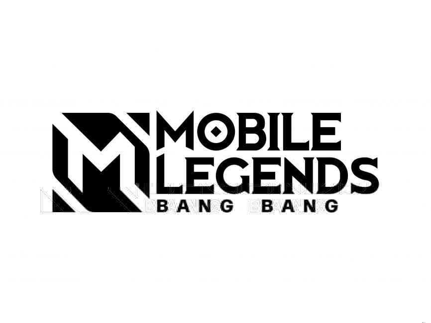Free Fire

Arena Of Valor
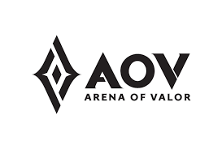PUBG Mobile
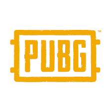DOTA2
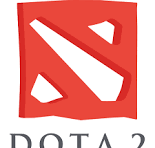Pokemon Unite
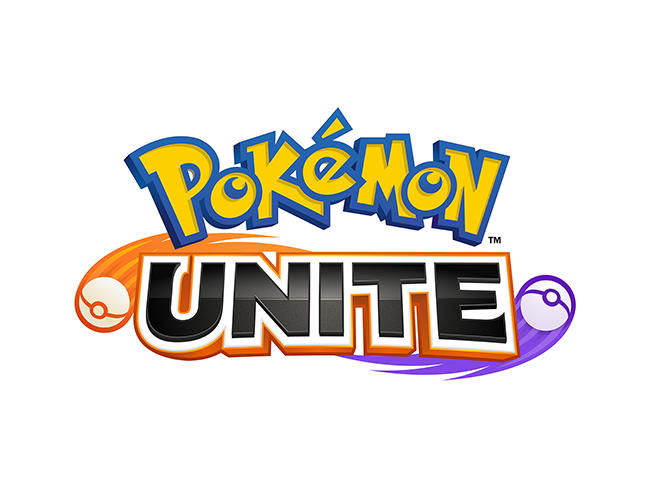Apex Legend
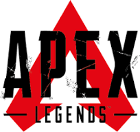League Of Legend
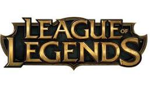
EVOS Esports adalah klub olah raga elektronik (e-sport) profesional yang berbasis di Jakarta, Indonesia yang didirikan oleh Ivan Yeo dan dipegang kendali oleh Hartman Harris Christian sebagai Presiden Direktur (CEO) di Indonesia. Juga penah memiliki tim kompetitif di ranah Mobile Legends: Bang Bang, Arena of Valor, Free Fire, League of Legends: Wild Rift, PUBG Mobile, DOTA 2, Apex Legends,Pokemon Unite.
Mobile Legends: Bang Bang
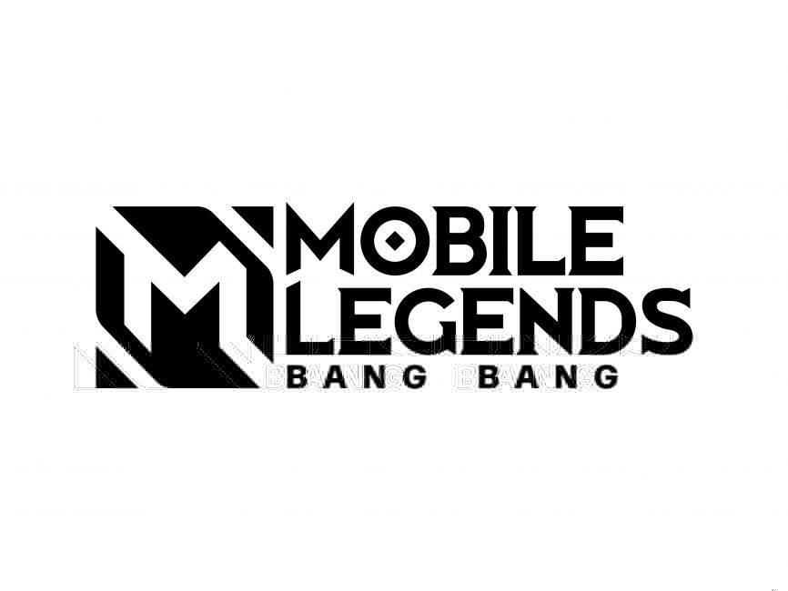Free Fire
Arena Of Valor
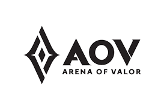PUBG Mobile
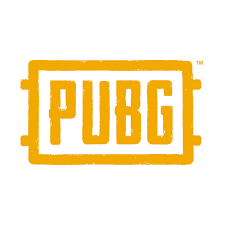DOTA2
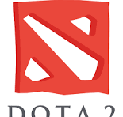Pokemon Unite
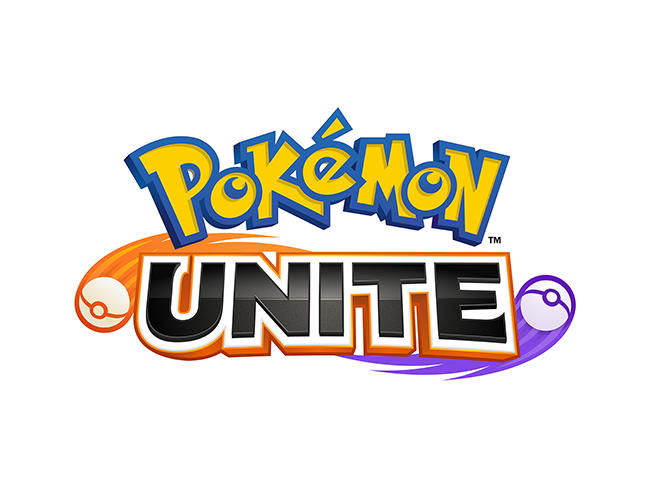Apex Legend
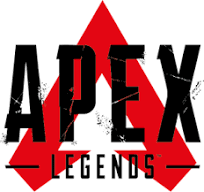League Of Legend
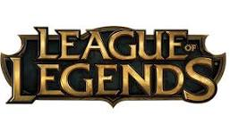Evos telah memenangkan banyak kejuaraan di berbagai game, termasuk kejuaraan regional dan internasional. Beberapa prestasi yang diraih termasuk:
Untuk informasi lebih lanjut atau kerja sama, Anda dapat menghubungi kami melalui: